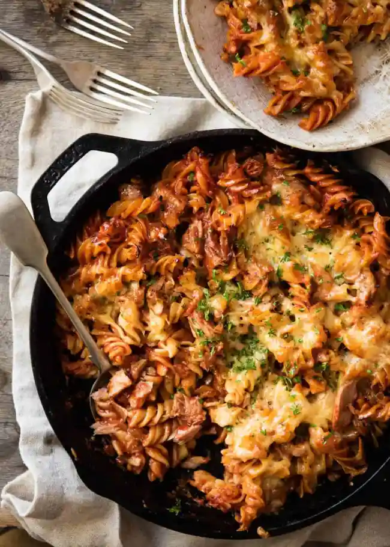

Tuna pasta bake

Description
Tuna pasta bake with delicious tomato sauce & mozzarella.
Ingredients
- 1 tbsp. olive oil
- 2-3 garlic cloves, minced
- 1/2 onion, diced
- 1 can (400g) crushed tomato
- 1 tsp. dried thyme
- 1 1/2 tsp dried basil
- 1 tsp oregano
- Salt & black pepper
- 1 can (150-200g) chunk tuna
- 160-180g pasta
- 125g mozzarella
Steps
- Preheat oven to 200°C
- Cook pasta per packet directions, minus 1 minute. Drain, rinse
under tap water to stop it sticking together, set aside.
- Meanwhile, make the sauce. Heat an ovenproof skillet over medium
high heat. Add garlic and onion, cook for 3 minutes until golden.
- Add tomato, water, herbs, salt and pepper and tomato paste if using.
Stir, bring to simmer, lower heat to medium and simmer energetically
for 5 minutes (stir every now and then) until it thickens.
- Adjust salt to taste. Also add a touch of sugar if it tastes a bit
sour (depends on quality of tomato).Adjust salt to taste. Also add a
touch of sugar if it tastes a bit sour (depends on quality of tomato).
- Turn the stove off, add pasta, stir in.
- Add tuna and GENTLY stir it in - don't break up the tuna so it
disintegrates into mush. Leave some chunks on the surface (nice when it
is golden).
- Drizzle with oil, top with cheese then bake for 18-20 minutes until
golden and you get those nice crusty bits you see in the photos.